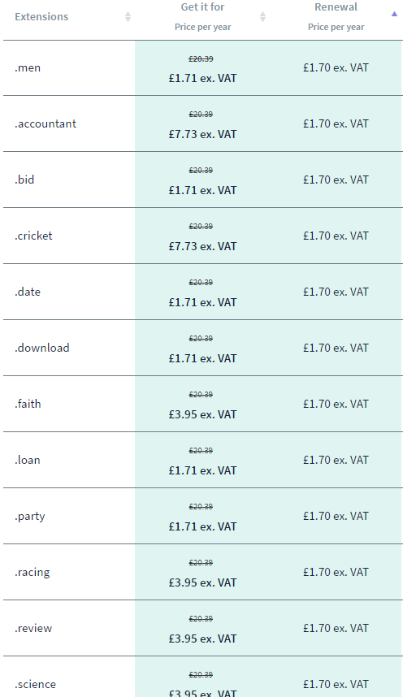
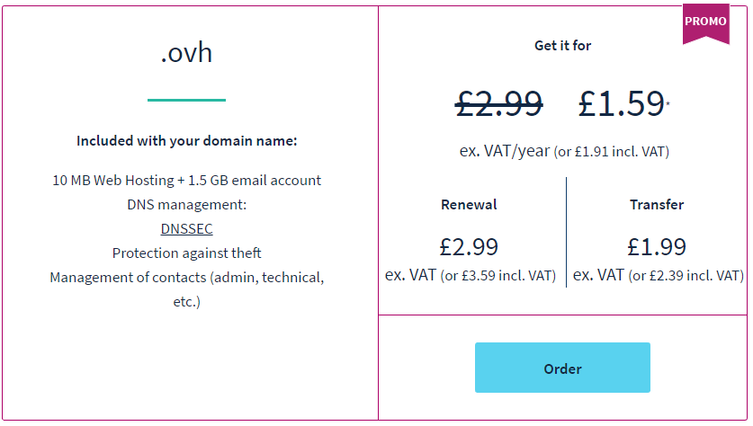
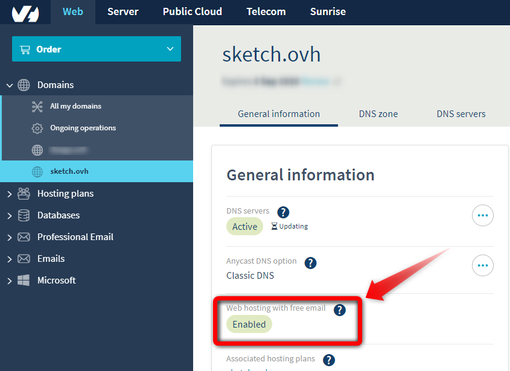
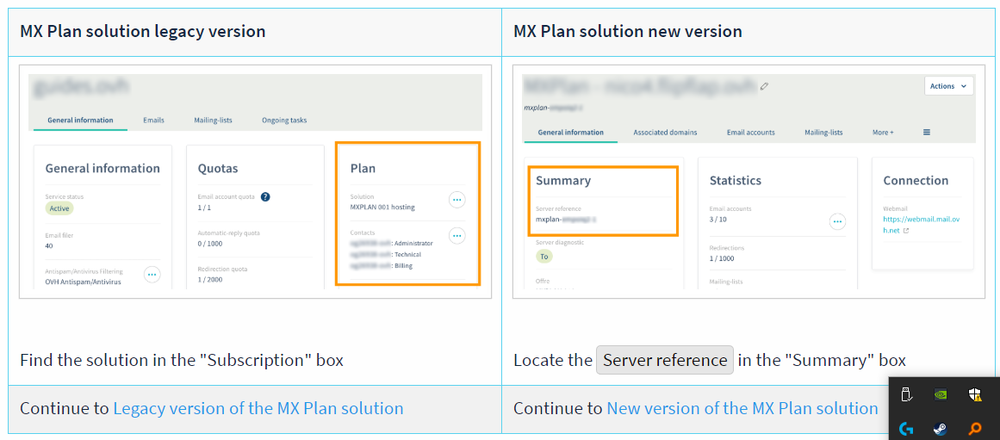

OVHドメインの取得

OVHドメイン取得を取得したときのメモです。取得して、Emailを有効にする、カスタムドメインを設定する。
楽に続けられそうなBlogに変える。
今まではbloggerでブログを書いていたのですが、というか最近ほとんど書いてなくて、なんかblogger行って、投稿画面開いて、っていうのが面倒になっていったんですね。
備忘録的なメモをvscodeでmarkdownでテキストベースで書き残して終わっていた。
あと、bloggerのテンプレートエンジンがなんか仕様が微妙に変わったり、情報が無かったり、古かったり、いじりにくくて、それも面倒になった理由の一つでした。
無料でほぼ無制限でadsenceも面倒な手続きなしに使えて、一番いいんだけれど、書くのが億劫になってしまっては意味がないと思い、普段の備忘録的なメモを書いているのと同じように、markdownでテキストベースで書き残せるブログで検討しました。
wordpressもなんか管理大変そうだし、静的な方が良いので、いろいろ楽に続けられそうな物を考えて、pelican+githubpagesにしてみました。 jekyllでもよかったのですが、pythonはすでにインストール済みだったのでpelicanにしました。
続けられるかわかんないし、ドメインも安いのさがした。
このような記事を発見し早速買ったので、その時のメモ。
Domain names- OVHから好きなドメインが空いてるかチェックします。 ブログ名Sketchが空いてたので取得。 Domain name price | Special offer on extensions - OVHをみるともっと安いドメインもあったのですけど、割と目的のはっきりした文字列なのでブログ向きじゃなかったのでovhにしました。 
支払はカードも使えるけど、Paypal残高があったので私はそれで支払いました。paypalってドル払いと円払いが選べて便利ですね。まぁ今回はユーロでしたが。
私が購入した価格はこれ。更新が超安い。

Emailの設定はちょっとわかりにくかった。
支払ったら、コントロールパネルからログイン。
これには.ovh domain name - OVH Registrarに書いてるように、10 MB Web Hosting + 1.5 GB email account がついてきます。今回はgithubpagesを使うのでホスティングは使わないと思うけど、メールは使うと思います。
これはコントロールパネルで有効にしないと使えません。
詳細はたぶん10 MB of free disk space with a domain name | Start10M- OVHこれかな。
でコントロールパネルから有効にできるよ！って最後に書いてあります。
メールを有効にするやり方はGetting started with an MX Plan solution | OVH Guidesこれなんですが、その前に
コントロールパネルのWebのタブ > 左メニューのDomainsを開く。 > 「取得したドメイン名」 > General informationタブ の General informationの囲み内のWeb hosting with free emailのところがEnabledになっていない場合はEnabledにしてください。私のは最初なってなかったです。

有効にする前の状態がこれ

それからGetting started with an MX Plan solution | OVH Guidesこれです。
なんか新しいシステムに移行中？みたいで2通りのやり方があり、自分のコントロールパネルの画面表示をみて、旧バージョンか新バージョンを判断してねということですかね。

私は旧バージョンのようでした。 Getting started with an MX Plan solution | OVH Guidesこのページにキャプチャとともにわかりやすい説明があるので、問題なく作れると思います。 英語苦手でもgoogle翻訳で大丈夫でしょう。 私も中学生レベルですが翻訳なしで大丈夫でした。
設定が終わってから、直後は 521 No Redirect Entry for this address のようなエラーが帰ってきますが2時間後くらいにはメールが使えるようになりました。
githubpagesのカスタムドメインの設定。
このページの通りにやった。
- コントロールパネルのWebのタブ > 左メニューのDomainsを開く。 > 「取得したドメイン名」 > DNSZONE のページの右の方、Add an entry のボタンからAレコートを4つ追加します。 この時 Sub-domain の欄は空で。
185.199.108.153,
185.199.109.153,
185.199.110.153,
185.199.111.153.
-
githubのUSERNAME.github.ioのリポジトリのsettingのカスタムドメインの欄にカスタムドメインを入力、少したってからhttpsを有効にするチェックを入れて完成。
-
私は一応 www のサブドメインも設定していたほうがいいのかな？っておもってCNAMEレコードをUSERNAME.github.ioで追加しておきましたけど、あってるのかな。。。。？必要なかったかな。DNSについてはよくわかっていないので正しいのかどうかわかりません。
まとめ
今のところは順調の様ですが、もう少し様子を見てみないと正しいのかわかりませんね！ でも、日本語の情報が少ない様子でしたのでどなたかの参考になればいいな！